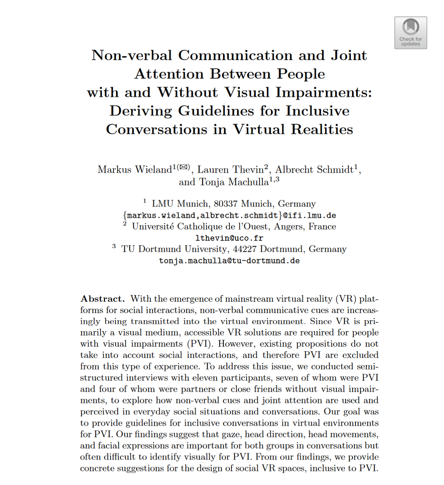

Non-verbal Communication and Joint Attention Between People with and Without Visual Impairments: Deriving Guidelines for Inclusive Conversations in Virtual Realities

Venue. Lecture Notes in Computer Science (2022) Full Paper
Authors. Markus Wieland, Lauren Thevin, Albrecht Schmidt, Tonja Machulla
Abstract. With the emergence of mainstream virtual reality (VR) platforms for social interactions, non-verbal communicative cues are increasingly being transmitted into the virtual environment. Since VR is primarily a visual medium, accessible VR solutions are required for people with visual impairments (PVI). However, existing propositions do not take into account social interactions, and therefore PVI are excluded from this type of experience. To address this issue, we conducted semi-structured interviews with eleven participants, seven of whom were PVI and four of whom were partners or close friends without visual impairments, to explore how non-verbal cues and joint attention are used and perceived in everyday social situations and conversations. Our goal was to provide guidelines for inclusive conversations in virtual environments for PVI. Our findings suggest that gaze, head direction, head movements, and facial expressions are important for both groups in conversations but often difficult to identify visually for PVI. From our findings, we provide concrete suggestions for the design of social VR spaces, inclusive to PVI.